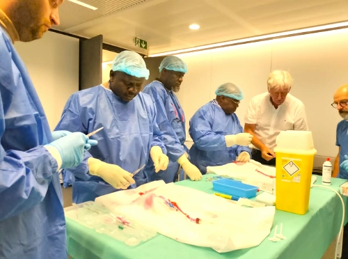
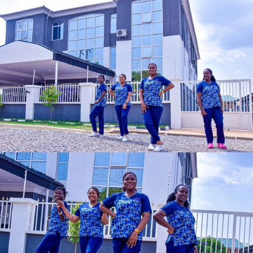
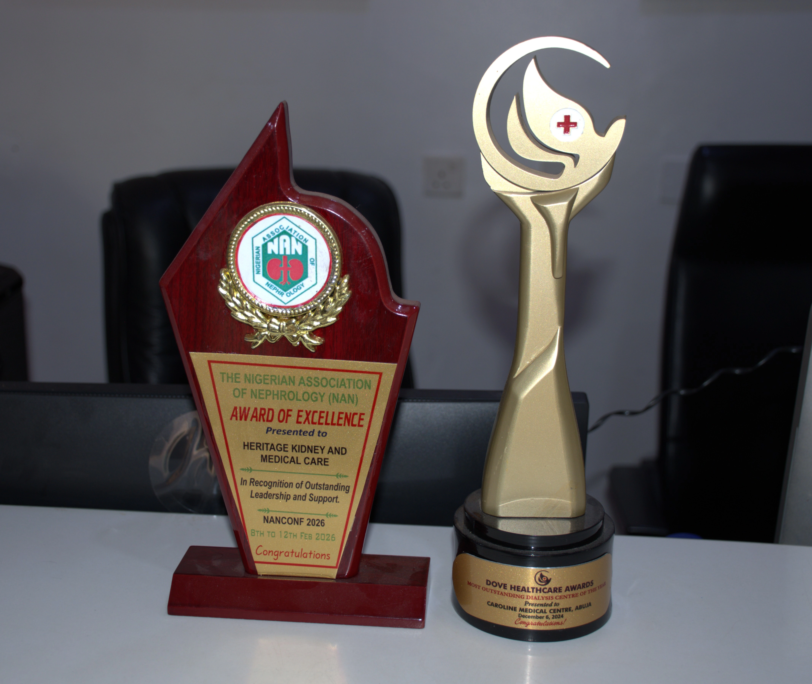

OUR STORY
Our story began in 2009, under the able leadership of Dr. Elijah Miner. We were a fledgling entity, operating as a “Specialized Team” whose primary function was saving lives using a single dialysis machine. This humble device was a lifeline to many patients, the first being Mrs. Habiba A.. She was our first dialysis patient and the first to be dialyzed by our team. Despite this modest beginning, we were driven by a vision to care for the ill and accommodate them as best as possible. Mrs. Habiba was touched by our commitment to her and other patients, which prompted her to transform her home into a healing center. She entrusted it into our hands to be used as Caroline Medical Center, located at Apo Zone E Legislative Quarters. This single act of sacrifice doubled our growth and spurred further expansion. To date, this facility remains robust and functional, providing healthcare to all. During this period, we were assisted by many through their generous donations and acts of kindness. Among them were Mrs. Alfa W. (who graciously loaned us a dialysis machine), Kamaldeen A., Hajia Fatima A., and a host of others who contributed significantly, each building a pillar of our foundation with their kindness. In 2011, we encountered a patient named Mr. Femi, who was rushed to Kapital Hospital for dialysis, where our team was collaborating with their management at the time. He was suffering from pulmonary oedema during an industrial strike by the labour union and had no access to dialysis. Eventually, we were able to insert a central line amidst difficulties. His condition emboldened us to think beyond simply performing dialysis as a permanent solution to kidney failure. This also reignited the team’s earlier ambition to initiate kidney transplantation in Abuja. Despite numerous attempts to implement this in government facilities, we were unable to perform such operations. Amid these discussions, a patient named Mr. Gabriel came to light. This fortunate encounter afforded us the opportunity to conduct our very first kidney transplant—and the first of its kind in Abuja—on December 14th, 2012. After this successful kidney transplantation, our team was invited to Garki General Hospital to further bolster renal care in their facility. We accepted their offer and expanded our vision toward new possibilities. During this period, we were able to transform renal care as intended, even as a nomadic team without a territory of our own. Yet, we found our footing amidst uncertainties and unpredictable circumstances. As our services grew in demand, the need for a more specialized and capable team also increased.

Today, Heritage Kidney and Medical Care stands as more than just a medical facility. We are a testament to countless acts of charity, each one strengthening our foundation. Our story is incomplete without acknowledging the unwavering support of Nipro Medical Nigeria. They have been more than just suppliers of our first dialysis machine; they have been true partners in our journey. Over the years, they have supported us by ensuring the smooth operation of our equipment and the supply of quality consumables that benefit our patients.
We remain committed to improving outcomes for patients with kidney failure. We continue to grow and set the pace for quality renal care. In 2025, we were recognized by the Dove Healthcare Award as the Best Dialysis Centre in Nigeria. With over 1,000+ dialysis sessions carried out monthly, and the addition of a radiology unit among other services to improve patient outcomes, we will continue to do our very best to remain at the pinnacle of renal care.

Our Vision
To become the Apex Kidney medical and surgical excellent hospital across the globe.
Our Mission
To inspire hope and contribute to health and well being by providing the best care with love and skills to every patient through integrated clinical practice.
Our Core Values
- H Hardwork
- E Excellence
- R Respect
- I Integrity
- T Teamwork
- A Attention to Patients
- G Growth
- E Empathy
Opening Hours
Monday – Sunday
24 Hours
Emergency
24 Hours
Pharmacy
24 Hours
Laboratory
24 Hours
Our Milestones
At Heritage Kidney and Medical Care, our journey is defined by resilience, innovation, and an unwavering commitment to specialized renal care. From our humble beginnings with a single dialysis machine, we have grown into a respected center for advanced kidney treatment and transplantation. Our progress reflects continuous investment in medical expertise, modern technology, and compassionate patient-centered care.
Our dedication to excellence has been recognized with the Award of Excellence by the National Association of Nephrology (NAN) — a testament to our high standards, clinical expertise, and commitment to delivering exceptional outcomes with empathy and professionalism.
